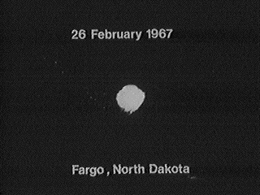

À Sauvigny-le-Bois (Yonne), M. et Mme Monin
et leur petite-fille vivent une RR3 : un
objet en forme de cigare éclaire l'environnement, approche silencieusement à 25 m des témoins, oscille et touche le
sol. Un petit être en combinaison en descend. Puis, rentrés dans leur maison, ils voient une boule rouge se former,
décoller et s'éloigner dans le ciel. Aucune trace n'est relevée Poher, Claude: "L'observation de Sauvigny-le-bois", Universons, 2004Poher, C.: "Les faits étranges qui sont à l'origine des travaux scientifiques présentés sur ce site", Universons, 2004.
Observation à Odessa (Delaware)Cas Blue Book n°
11350 non résolu.
Observation à Grand Rapids (Michigan)Cas Blue Book n° 11355
non résolu.
Observation à Stoughton (Wisconsin)Cas Blue Book n° 11383 non résolu.
Observation à Oxford (Wisconsin)Cas Blue Book n°
11394 non résolu.
4 étudiants grade à Roosevelt (Utah) jouent avec une planche de Ouija et sont informés
qu'une soucoupe volante apparaîtra au-dessus de l'hopital de la ville à 20:00 le 23 février.
A Roosevelt (Utah), les enfants de la famille de Clyde
McDonald se ruent dehors pour se rendre au rendez-vous et rentrent à l'intérieur en courant. L'ovni est là. Les
parents confirment qu'il y a effectivement une grosse boule de lumière orange au sud-est au-dessus de l'hôpital.

A l'école de Roosevelt (Utah), l'observation de la veille est sujet de conversation,
nombre d'autres fourth grader l'ayant vue aussi. Plusieurs autres personnes sont documentées comme ayant dit avoir
vu la lumière ronde voyageant du sud au nord au-dessus de Roosevelt. Une boule orange pourrait ne pas être une
soucoupe volante, mais cela semble toujours être un prédication avec succès impressionnante étant donné le statut de
témoins multiples, la spécificité du moment prédit, et l'absence d'une source évidente de méprise (ballon de
canular ?). Comme le fait remarquer Frank B. Salisbury,
la chose vraiment intriguante est que la prédiction est venue d'un groupe d'enfants qui jouaient avec une
planche Ouija. Qu'est-ce qu'un scientifique non-superstitieux du 20ème siècle peut dire de çà ?Kottmeyer, M. S.: "Still Waiting: A List of Predictions from the 'UFO Culture'", The Anomalist, 1998.
Observation (ci-contre) à Fargo (Dakota du Nord).
Observation à Grand Haven (Michigan)Cas Blue Book n°
11419 non résolu.